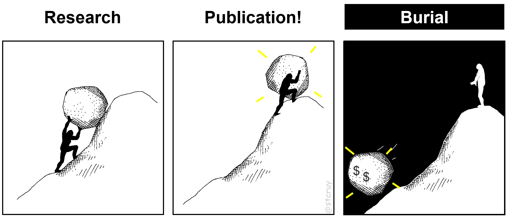

How to Easily Plant Complex Ideas into Computers
– An intuitive way to translate any “piece of information” and its full context into a computation-ready form.
To people in a hurry: First read the Piece-of-Information definition.
Then read
either How VSM works on page 2,
or just its 5 Short Stories, or even only VSM in a nutshell.
1a. A General, Fun-To-Read Intro 0
Blue notes are fun: for remarks, my side-thoughts etc.
Grey notes are boring: for references.
1
So I thought long about ‘Who is the target audience for this Intro?‘.
And I decided: it’s for readers like those of the sciency
WaitButWhy site
(by Tim Urban, who was hired by Elon Musk to
write about the vision behind Tesla, SpaceX, and Neuralink)
. – I.e.:
for curious, smart people who are eager to learn about a new field, but who also require to be entertained. – Why?
Because my goal is to reach as many young-spirited scientists as possible.
←Click these
One might think that Science is an awesome, well-oiled machine.
Where everyone builds on top of what others found out before. And everyone shares their new findings with all the others, in an efficient way. So the next scientist can immediately build further, upon the new sum of human knowledge.
Not quite so.
Spreading new insights in science goes at the speed of a snail. Because most findings are published in PDF files. As plain old text. A wordy format that takes a lot of mental effort to process and understand.
And you’d be wrong to assume that computers can process all this for us.
They can’t even read one full text and give a reliable, detailed summary.
Because they do not ‘understand’ text as we do.
Only a human mind is able to read a PDF and properly understand the maddening complexities of the real world.2
Consider even a simple example to see how ambiguous language is:
If I say: “The cat ate the fish. Now IT is dead”, then who died? You’d say: the fish.
But what if I had first said: “The fish was poisoned” , now who died? The cat!…
It’s super hard to make a computer program ‘understand’ stuff like that, and especially in science… – It
would need to learn all about how the world works first, before it can decipher text.
So it’s really time-consuming for each scientist, to read all this and find out what thousands of others have discovered.
In the Life Sciences this is especially a problem.
For example in Molecular Biology, scientists need to study systems of
10’000s of different molecule types that all kick & push each other around, in their own weird ways. (That’s just how biological systems works).
And every tiny interaction that was discovered at some time, is now described, or in fact hidden,
in one of the millions of PDFs out there : 1There are ~ 25 million research articles in the Life Sciences
(extrapolated for 2018). And they publish over 800’000 new ones each year.
Source: https://www.nlm.nih.gov/bsd/medline_cit_counts_yr_pub.html
3 If you print all PDFs of 2018, how high would they stack?
Say, 8 pages/pdf, double-sided, 0.05mm/sheet, 800’000 pdfs :
That’s 160 meters (500 feet) of paper for this year alone. – That equals to
an entire Wikipedia per year.
And over 5 kilometers (3 miles) of biomedical literature
since 1945.
That’s 15 Eiffel Towers high.
Or 12 Empire State Buildings.
←Click the blue note

And when you want to learn “The Big Picture Of How A Biological System Actually Works”,
you really need to bring gazillions of pieces of knowledge together, to study how they interact as a ‘biological network’.4 Wikipedia:Biological_network shows that ‘networks’, or webs of interconnected things,
are crucially important for studying all of Life.
Some examples of Biological Systems or networks are: the control mechanism
of how genes turn each other on/off,
or of interactions between proteins,
or the network of brain connections,
or higher level networks like this. And that’s a bit of a problem:2 Left image: from wikimedia.
Actually, it shows a network of only one type of interacting components (proteins).
But in reality there are tons of other components involved, to keep a cell alive.
But I guess this is good enough for a cartoony figure.
{kind=link}

No one can read up on that mountain of PDFs. Not even if you team up with some friends : you can only extract a fraction.3 Baumgartner 2007 (Fig. 3-7) shows trends
for teams who read up on a particular topic and catalogue it.
Conclusion: Their ‘To Do’-List keeps growing faster than their ‘Done’-List.
We’d probably know much more about what went wrong in my friend David who has cancer, if we could piece all this knowledge together. If we could use computers to get an overview, and make them really ‘understand’ what is hidden in those 25 million PDFs. – But that’s impossible with current technology.
In other words, we are not able to fully benefit from the decades of expensive research results that exist out there! :
—> Basically, we are spending monumental efforts to make plenty of discoveries,
but then we bury them all again into a free-text format that’s hardly accessible at all :

And so, millions of potentially life-saving “pieces of information” stay locked up in scientific literature.
What is a “piece of information”?
This is our key concept! So let’s first make clear what we mean by it.
• First, there exists this distinction between Data and Information:4and between Knowledge, and sometimes Wisdom too.
See Data-Information-Knowledge-Wisdom pyramid.data is raw numbers from an experiment
(like monkey nr. 5 eats 2 bananas), and information
is ‘interpreted data’ (like Oh, monkeys prefer bananas over pizza! 💡).
• Second, while data is nicely structured (it’s easy to put in an Excel table),
information can be any insight at all.
In the context of science, this would be a conclusion of a research paper.
Like:
“parts A and B of the brain get connected in a 6-week-old mouse embryo“. – Or:
“molecule A puts a phosphorus-atom on molecule B, but only when molecule C is present, and that makes a cell start to grow“. – Or:
“bacteria A releases molecule type B which makes part C of a D-type modified human liver react so and so“. – Or:
“molecule A binds to B, at least according to our (error-prone) experimental setup X“.
So yes… a “piece of information” can have any form at all. – It’s an acquired insight, an idea5 In the sense of dictionary.com ‘s: any conception existing in the mind as a result of mental understanding; a thought, conception, or notion, developed by the mind. , a “unit of thought”, than can be about any topic, and can include any details of a context.
And all these pieces of scientific information are being published in PDFs : as free, unstructured text.
Horses
Let’s make a fun analogy to explain what causes this problem:
Communication in science is like living in the mid-1800s. Where you can only transport cargo (i.e. information) on slow horses. And on a few steam trains here and there.
In the analogy, each horse (i.e. PDF) carries some ‘pieces of information’ (scientific findings) from one human mind to the next. Horses require a lot of personal attention from us though, for every single delivery. – It’s often a bit tedious to understand what each horse is neighing to you.
Luckily, we already have some steam trains here and there.
In our analogy, the trains represent the databases5
A database is simply Excel on steroids:
you fill it so you can make advanced calculations over your data.
that carry biological information.
Their precious cargo has been manually harvested from PDFs, by really good-hearted and often underpaid people.6…who read PDFs all day.
And try to decipher what the cryptic authors actually meant to say.
And sometimes need to email them to be sure.
And then nicely package it so it fits on the trains.
Yes, a lot of work goes into filling the databases. Even though some scientific funding managers think this just happens magically. 🙈🙉🙊 But it’s worth it: it makes science run so much smoother when information is structured: it just whooshes from mind to mind on rails.
You get a clear, succinct piece of information delivered to you, without spending all that time trying to understand horses.
However. Our information-trains are clunky as hell. They would even make our 1800s’ ancestors laugh at us.
Because they have a fundamental design flaw. Each train can transport only one type of cargo!
If you want to transport something new, you must design a whole new train for it.7
Imagine buying stuff online, but you can only get books by train.
So electronics, toys, ice cream… have to be packed on a horse and you have to wait two months before it gets there.
Likewise you must tell any new database exactly what it is going to store. Anything else won’t fit in later.
Clunky steam trains!
And there’s a second reason why our 1800s’ folks are mocking us:
our trains are totally understaffed. There’s almost no one there, paid or trained to load them in the first place!6 Howe D, et al: The future of biocuration (2008), Nature.
So yes, most people just use a horse :
No wonder horses are popular: they can carry everything that doesn’t fit on trains. And everyone knows how to ride a horse.
And the same goes for PDFs : free text, or natural language, is the most versatile tool for easily expressing our thoughts.
We can write down whatever we may think of (while computers need strict forms and checkboxes). – But
horses are just too slow for the modern age of Big Data we have now entered.8When you think about it: PDFs are a relic for a technology not invented yet.
Our clunky databases, however, are harbingers to a future of ‘mechanized knowledge’ processing.
A future that our grandchildren will find just as obvious as we find Excel.
(Btw, maybe we could use the term “Big Information” for the situation in the Life Sciences: with vast amounts of diverse pieces of information?)
The Tesla Moment
We live in the 21st century now. And we know better.
It’s time for some self-driving electric cars, that can take anything anywhere fast. Or trucks. Or androids on electric motorbikes.
To get here, we must invent some kind of… ‘versatile digital engine’. Meaning: we need (1) a multi-purpose, extremely versatile carrier for sharing scientific findings, (2) that a computer intelligence can ‘understand’ and help us with too, and (3) that many people will actually like to start using.
So, we need a computational tool that can carry any information. That can hold whatever we may think of, in a computable form. And that is so easy to use for the commoner that, well… most of us will want to keep our PDF-horse as a pet and start using wheels to get around:

Such a tool would of course not mean that the PDF-horse’s days are counted.9And that’s a “Hold your horses” to doubters and knee‑jerk neigh‑sayers 😃 Scientific prose is still valuable for showing how conclusions were reached and why they are meaningful. – What is needed right now, is to give people an easy-to-use tool to create a complete, digital summary for any PDF, with which our dear friend the computer can do something meaning -ful.
With a little tool like this, that powerful, imagine what humanity could create. We could team up and transform the sum of human knowledge, into an in-depth, computer-queryable form. (And I hope my friend with cancer could live to benefit from that). – You could imagine something like a Wikipedia, where every page shows the full summary of one PDF, but in a way that both humans and computers can fully ‘understand’… That would be quite a utopian future, where all scientific knowledge has been nicely combined into some machine intelligence, and all we need to do is come up with clever questions. Which immediately get answered. Like by Google’s wiser sibling.
So let’s first invent… a simple way to transform any ‘piece of information’ into a computable form.
That was the teaser.
Now follows a deeper introduction, so we’re all prepared to
‘get’ the beauty of the solution that we’ll describe after that.
Because we created something that is actually unique.
1b. A Deeper Background
Our story really starts with the growing need for Computable Information, which is one of the most valuable things to have in this day and age:
“Computable Information” blue box
Definition:
Computable information = pieces of information (as defined in that earlier blue box)
that have been converted into a “computation-ready” format.
It is “usefully formatted” pieces of information. Only information that has been translated into some structured format (in contrast to plain text), has been made computable. E.g. when it’s stored in a database.
Only then can people write software to analyze and integrate it in an automated way. Only then can we say that a computer can ‘understand’ the meaning of it, and can it do ‘meaning’-ful computation on it.
a) WHY is computable information so cool to have?
I’ll answer this from the perspective of the Life Sciences (as that’s where I work now), but I’m sure it applies to other fields too :
Computable information is becoming a cornerstone of today’s bioscience research, especially when the focus is on studying how numerous interacting components work together as a system. If you want to address complex questions like ‘how does the molecular machinery work or malfunction in cancer cells’, or ‘what is the best remedy for a patient’s particular cancer’, you must study the dynamics of the system, i.e. how the system reacts internally, to outside changes. And for that, you simply need a computer.
So computers can do more than just give us better Search, or draw static overviews (which is already cool) : When you tell a computer everything you know about some biological system, it can let you explore that system in a kind of abstract “Virtual Reality“ (VR) !
Then you can play around in this dynamic, digital, simulated world. You can modify one or two things, and study how many many other things are logically bound to react.10 My friend Ward was the first to explain biological systems to me. He described them as: “If you poke a biological cell with anything, then suddenly lots and lots of things inside it come to life. It’s like a spider-web of molecules that are all connected. – For example when a cell detects an infection (or a drug, or a change in temperature), then on a molecular level the cell basically starts lighting up and flashing like a christmas tree, to deal with this new situation”. You can also test if what you know so far about biology makes sense on its own, by checking of your virtual world responds in the same way as real-world biological experiments do. And you can hypothesize which tiny things you could fix, in order to change the entire virtual world’s state from e.g. ‘cancer’ to ‘healthy’.
And most splendid of all: you can now make a computer play with itself, in its little/giant virtual world.
You can let it try out millions of hypotheses, and test all the effects.
Then by the time you had your coffee the next morning, you got the results of millions of dirt-cheap virtual experiments.
And you can go to your boss with a really good case about which of the 5.000$-tagged real-world experiments you should try out first,
given your budget only has room for twenty of them.7 This already happens, see e.g. Flobak 2015: Discovery of Drug Synergies in Gastric Cancer Cells Predicted by Logical
Modeling. 11 I actually work with a European project that’s based on this.
It’s part of the DrugLogics initiative where it’s called “Rational drug response prediction”.
There’s a short PhDComics video !
Here’s a computer playing the VR-game “Beat The Cancer genes”, based on computable information:

Computable information enables us to reason through combined, integrated knowledge, and handle it on a scale much larger than what our limited human minds could ever deal with.
Of course, one can only construct these virtual biological worlds (called “biological models”) based on a sufficiently detailed and large collection of prior knowledge, all available in computation-ready form.
(This is similar to the ‘FAIR’ call, for sharing raw experimental Data in a reusable way).8 The FAIR Data Principles
are calling for experimental (structured) Data to be made: Findable, Accessible, Interoperable, and Reusable.
Quite similarly here, we wish for heteregenous Information to become, not only findable, but also computationally integratable.
b) WHO creates computable information? Who drags it out of messy text?
Broadly speaking, there are three categories of people who do this: professionals, temporarily organized ones, and individuals.
But first, let’s update our vocabulary:
“Biocuration” – how to be a Guardian of the Life Sciences
A biocurator (or curator) is a person who finds, reads & interprets pieces of information in a PDF‘s text and figures, and translates them into a computable format.9 See Wikipedia: Biocurator or https://biocuration.org So:
Natural Language piece of information --> biocuration --> Computable Information
Curators are the (often unnoticed) philanthropists who fill the databases that so many biologist use to get their work done. They spend their time to read scientific literature, clear up obscurities that authors have left in the PDFs, and produce structured information.
They basically make information easily reusable, either for themselves or for others.
Now, our first category of biocurators are the professional biocurators.
They are employed at institutions whose mission is the development and the long-term maintenance of large databases
(e.g. at EBI, GO, UniProt, NCBI).10 • EBI: European Institute for Bioinformatics,
• GO: Gene Ontology,
• UniProt,
• NCBI: National Center for Biotechnology Information.
These initiatives form the backbone of a more and more large-scale way of working: of a modern, data- or IT-driven Life Sciences.
News flash : If you’d put all biocurators together on a few airplanes and they crash (and you wouldn’t need too many planes),
modern Life Sciences would come to a grinding halt.12 I would say that the Bus Factor of modern Life Sciences is pretty low:
there are many people who do experiments, but relatively only a critical few who make experimental data or research conclusions easily reusable.
Sure,
there are also people who develop algorithms to ‘text-mine’ the PDFs (to retrieve very specific facts), but these still need manually created ‘training sets’.
My point is: although professional curator groups have developed good curation strategies (also semi-automatic ones), they cannot keep up with the increasing amount of Life Science literature. With nearly a million new papers published each year, only a fraction of information and of selected topics can get structured.
That’s why the second category of curators keeps popping up: the temporarily organized curators. These are often scientists who start a new project, realize the value of structured data/information, develop their own database, spend hundreds of hours filling it with information which they manually curate from literature – but then run out of their 2-year funding, and either keep the database online in an unmaintained zombie state, or simply let it go offline and die.
There are many hundreds of these smaller-scale databases, all at various stages in this precarious life‑cycle.11 E.g. HTRiDB,
or see the BioSharing database of databases, or see this list,
or this list
(note: these lists show a mix of databases of curated information, as well as of experimental data).
And even larger databases have run out of funding, causing chaos, e.g.
TAIR (now rescued by Phoenix Bioinformatics).
See also the ‘Databases in peril‘ Nature editorial.
All these databases aim to cover a particular, quite narrow topic in the Life Sciences. Still, there are many more topics and information types than any of these efforts, combined, were designed to cover.
And that is where the third category comes in: the unknowingly-biocurating individual scientists. Most people who need some structured overview in their research niche have to create it themselves, and engage, without realizing it, in curation. They read a selection of relevant papers, and note down a list of useful facts, or sometimes even collect them in an Excel spreadsheet (because of course, the majority of bioscientists has no expertise in setting up a new online database).
During my 15 years of interacting with various research labs, I’ve seen these local curation efforts happen over and over again:
e.g. on plant cell cycle and biomass13 I was involved in a whole department effort, where a few dozen researchers from various research groups
wanted to curate diverse information on how plant cells work and grow. (E.g. for making rice produce more biomass in challenging climates).
A challenge was that the information they wished to collect was quite heterogeneous, more than what plain spreadsheets can easily handle. ,
or on stomach cancer gene-regulation12 At the Gastrin research group
at NTNU University. ,
or that researcher who curated brain tissue connectivity (and now left that job),
or that person who was looking for a proper tool to curate 30 papers on microbe/surface-protein interactions, and so on.
Many of these efforts start out in an ad-hoc way, and their short-lived yield is never even shared with others.
Here’s a sketch of this landscape of biocuration projects:
So, even though we keep witnessing a large drive to have information computationally accessible, most information in PDFs never makes it into a curated form. And for that what does make it, much of it is never even shared, or just gets lost and dies at the end of a project.
c) WHAT types of information do people want to ‘curate’?
Whatever one can think of :
The largest possible variety of information types (many topics, and scales13 See Wikipedia: Levels of biological organisation. in biology) is being described in scientific papers, and this with any amount or variety of context details (biological samples, treatments, experimental conditions, etc.).
And so the information, useful for building biological models, can be extremely diverse and irregular. Yet, the more of these irregular contextual details you record, the more useful your collection of information becomes. Because then you can take into account the precise conditions under which it is valid! See this:
“Context details” blue box
For software, it is easiest to work with core facts : simplistic, regularized, reduced information. But in order to reason and to derive proper conclusions, it is necessary to embed such core facts into a meaningful context.
For example, imagine software that would only let you store facts of the form “X is Y”, without any additional context. Then you could only store thinks like “Cat is alive” or “Cat is dead”.
But what you’d really need to capture is things like: “Cat was alive, in the year 1999“, or “Cat is dead before Dog was born“, or “Cat is dead because it ate poisoned fish“, or “Eve claims that Cat probably will be alive in 2050, if you let her adopt it“. (See also the examples in the Piece-of-Information blue box!)
Such details embed information in any possible “context”, which are an essential part of the information unit. Because they tell the circumstances under which it is valid. So remember: 14 Adapted from Star Trek Discovery episode 1.03: ‘Context is for Kings’.
Therefore, curation tools should enable us to capture any context details to the fullest.
d) HOW are people ‘curating’? What tools do they have?
Well, this is The Key Problem :
No one knows yet how to design software, that enables biologists
to easily capture all information types & context they want to, into a computation-ready form.
Current curation technology is built around “predefined schemas”,
i.e. abstractions of only parts of the information and its context that one anticipates to capture.
Today, if you’re a software developer and you need to design software that support curators, you have two options: to use database tables or to use a formal language. Let’s look at both:
If you use database tables (or forms or spreadsheets), you start by defining a fixed number of columns.
But then during an actual curation process, working with specific literature,
you can bet that curators will become aware of extra types of information or relevant context they will want to capture too.
But accommodating such wishes post-hoc would require expensive updates to your database schema and user interface. So that rarely happens.
And this inevitably condems curators to forcing square pegs into a round hole, whereby possibly essential contextual information is left out.14 Then typically, one column evolves to become “that desperate column with free-text notes of extra context that didn’t fit anywhere else – plus
we also wanted to stop adding even more columns to our spreadsheet/form/table because who can deal with more than 30 columns anyway?”.
But rather-free-text in a table cell is of course not ‘computable information’, which defeats the purpose of putting it there. – E.g.:
GO Annotation File’s Column 16, or
PSI MITAB‘s Column 28.
On the other hand, if you use a Formal Language15 or Controlled Language.
I.e. an artificial language, with well-defined vocabulary, and restricted grammar rules.
See this
and this Wikipedia page. (e.g. ACE16 See the Attempto Controlled English project site
or its Wikipedia page. ,
BEL17 See the Biological Expression Language project site
or this Introduction to BEL. ),
then your curators can capture information & context in a ‘sentence’ or ‘statement’ format. This is more versatile to use, and also easier to read
(e.g. “Cat is Alive in 2020“ 15 That would be a valid statement in a Controlled Language that defines
that sentences with the structure ‘<subject> IS <state>‘ are valid (among others),
and has a rule that extensions like ‘IN <timeInterval>‘ are recognized too. ).
But this requires that curators are willing to learn the language’s long list of rules, so they know which statements your software will accept.
Unfortunately, the more expressive you make a formal language (i.e. the more variety of information you design it to capture),
the more rules the language will need. And that makes the language harder and harder to learn for curators.
And then the computer may misunderstand them when they forget a rule (e.g. 16
Take for example a controlled language that uses a rule like: ‘a preposition
(e.g. “with”) always pertains to the word that comes just before it’.
Then consider even a simple sentence like “John eats chicken with fork“.
The computer would interpret this as: it’s the chicken that has the fork (instead of John eating with it) !
And that’s just a 5-word sentence.
For longer, real-world biological sentences, you’d have to navigate myriads of rules like that.
) :
Likewise, RDF18 See the Resource Description Framework project site or this Wikipedia page, or these images to see what information represented in a graphical form of RDF looks like. is a most expressive method that can represent composite information. But it is only usable for experts in knowledge management. These tools are not easy to use by typical curators whose main expertise is in biology.
So the status of current curation technology is the bottleneck: it prevents people from effectively communicating their most complex ideas with computers. And that prevents the possibly many scientists who wish to curate, or who are curating, from making more information computable.
e) So let’s summarize: What new technology is needed?
Given the above, we need to develop ‘some new tool’ for this: a format / way / method / interface / … :
It must be a tool that is simple & intuitive to use, so that many more people can use it. Especially non-IT’ers like bioscientists, and especially emerging communities of non-professional curators. So that together, they can make much more information computable.
It must also be a tool that is highly flexible / expressive, so that any information with any, full, rich context can be curated easily. So that subsequent computation can be based on highly accurate, ‘real‑world’ pieces of computable information.
So we need something in the middle of this Venn diagram:
In essence, we need an easy method for planting complex ideas into computers.
We took up the challenge to design such a method!
We call our solution VSM, or Visual Syntax Method,
and explain it on the next page:
- 1
So I thought long about ‘Who is the target audience for this Intro?‘.
And I decided: it’s for readers like those of the sciency WaitButWhy site (by Tim Urban, who was hired by Elon Musk to write about the vision behind Tesla, SpaceX, and Neuralink) . – I.e.: for curious, smart people who are eager to learn about a new field, but who also require to be entertained. – Why? Because my goal is to reach as many young-spirited scientists as possible. - 2
Consider even a simple example to see how ambiguous language is:
If I say: “The cat ate the fish. Now IT is dead”, then who died? You’d say: the fish.
But what if I had first said: “The fish was poisoned” , now who died? The cat!…
It’s super hard to make a computer program ‘understand’ stuff like that, and especially in science… – It would need to learn all about how the world works first, before it can decipher text. - 3 If you print all PDFs of 2018, how high would they stack?
Say, 8 pages/pdf, double-sided, 0.05mm/sheet, 800’000 pdfs :
That’s 160 meters (500 feet) of paper for this year alone. – That equals to an entire Wikipedia per year.
And over 5 kilometers (3 miles) of biomedical literature since 1945.
That’s 15 Eiffel Towers high.
Or 12 Empire State Buildings. - 4 Wikipedia:Biological_network shows that ‘networks’, or webs of interconnected things,
are crucially important for studying all of Life.
Some examples of Biological Systems or networks are: the control mechanism of how genes turn each other on/off, or of interactions between proteins, or the network of brain connections, or higher level networks like this. - 5 A database is simply Excel on steroids: you fill it so you can make advanced calculations over your data.
- 6…who read PDFs all day.
And try to decipher what the cryptic authors actually meant to say.
And sometimes need to email them to be sure.
And then nicely package it so it fits on the trains.
Yes, a lot of work goes into filling the databases. Even though some scientific funding managers think this just happens magically. 🙈🙉🙊 - 7
Imagine buying stuff online, but you can only get books by train.
So electronics, toys, ice cream… have to be packed on a horse and you have to wait two months before it gets there.
Likewise you must tell any new database exactly what it is going to store. Anything else won’t fit in later.
Clunky steam trains! - 8When you think about it: PDFs are a relic for a technology not invented yet.
Our clunky databases, however, are harbingers to a future of ‘mechanized knowledge’ processing.
A future that our grandchildren will find just as obvious as we find Excel.
(Btw, maybe we could use the term “Big Information” for the situation in the Life Sciences: with vast amounts of diverse pieces of information?) - 9And that’s a “Hold your horses” to doubters and knee‑jerk neigh‑sayers 😃
- 10 My friend Ward was the first to explain biological systems to me. He described them as: “If you poke a biological cell with anything, then suddenly lots and lots of things inside it come to life. It’s like a spider-web of molecules that are all connected. – For example when a cell detects an infection (or a drug, or a change in temperature), then on a molecular level the cell basically starts lighting up and flashing like a christmas tree, to deal with this new situation”.
- 11 I actually work with a European project that’s based on this.
It’s part of the DrugLogics initiative where it’s called “Rational drug response prediction”.
There’s a short PhDComics video ! - 12 I would say that the Bus Factor of modern Life Sciences is pretty low:
there are many people who do experiments, but relatively only a critical few who make experimental data or research conclusions easily reusable.
Sure, there are also people who develop algorithms to ‘text-mine’ the PDFs (to retrieve very specific facts), but these still need manually created ‘training sets’. - 13 I was involved in a whole department effort, where a few dozen researchers from various research groups
wanted to curate diverse information on how plant cells work and grow. (E.g. for making rice produce more biomass in challenging climates).
A challenge was that the information they wished to collect was quite heterogeneous, more than what plain spreadsheets can easily handle. - 14 Then typically, one column evolves to become “that desperate column with free-text notes of extra context that didn’t fit anywhere else – plus
we also wanted to stop adding even more columns to our spreadsheet/form/table because who can deal with more than 30 columns anyway?”.
But rather-free-text in a table cell is of course not ‘computable information’, which defeats the purpose of putting it there. – E.g.: GO Annotation File’s Column 16, or PSI MITAB‘s Column 28. - 15 That would be a valid statement in a Controlled Language that defines that sentences with the structure ‘<subject> IS <state>‘ are valid (among others), and has a rule that extensions like ‘IN <timeInterval>‘ are recognized too.
- 16
Take for example a controlled language that uses a rule like: ‘a preposition
(e.g. “with”) always pertains to the word that comes just before it’.
Then consider even a simple sentence like “John eats chicken with fork“. The computer would interpret this as: it’s the chicken that has the fork (instead of John eating with it) !
And that’s just a 5-word sentence. For longer, real-world biological sentences, you’d have to navigate myriads of rules like that.
Blue notes list:
- 1There are ~ 25 million research articles in the Life Sciences
(extrapolated for 2018). And they publish over 800’000 new ones each year.
Source: https://www.nlm.nih.gov/bsd/medline_cit_counts_yr_pub.html - 2 Left image: from wikimedia. Actually, it shows a network of only one type of interacting components (proteins). But in reality there are tons of other components involved, to keep a cell alive. But I guess this is good enough for a cartoony figure.
- 3 Baumgartner 2007 (Fig. 3-7) shows trends
for teams who read up on a particular topic and catalogue it.
Conclusion: Their ‘To Do’-List keeps growing faster than their ‘Done’-List. - 4and between Knowledge, and sometimes Wisdom too.
See Data-Information-Knowledge-Wisdom pyramid. - 5 In the sense of dictionary.com ‘s: any conception existing in the mind as a result of mental understanding; a thought, conception, or notion, developed by the mind.
- 6 Howe D, et al: The future of biocuration (2008), Nature.
- 7 This already happens, see e.g. Flobak 2015: Discovery of Drug Synergies in Gastric Cancer Cells Predicted by Logical Modeling.
- 8 The FAIR Data Principles
are calling for experimental (structured) Data to be made: Findable, Accessible, Interoperable, and Reusable.
Quite similarly here, we wish for heteregenous Information to become, not only findable, but also computationally integratable. - 9 See Wikipedia: Biocurator or https://biocuration.org
- 10 • EBI: European Institute for Bioinformatics,
• GO: Gene Ontology,
• UniProt,
• NCBI: National Center for Biotechnology Information. - 11 E.g. HTRiDB,
or see the BioSharing database of databases, or see this list,
or this list
(note: these lists show a mix of databases of curated information, as well as of experimental data).
And even larger databases have run out of funding, causing chaos, e.g. TAIR (now rescued by Phoenix Bioinformatics). See also the ‘Databases in peril‘ Nature editorial. - 12 At the Gastrin research group at NTNU University.
- 13 See Wikipedia: Levels of biological organisation.
- 14 Adapted from Star Trek Discovery episode 1.03: ‘Context is for Kings’.
- 15 or Controlled Language. I.e. an artificial language, with well-defined vocabulary, and restricted grammar rules. See this and this Wikipedia page.
- 16 See the Attempto Controlled English project site or its Wikipedia page.
- 17 See the Biological Expression Language project site or this Introduction to BEL.
- 18 See the Resource Description Framework project site or this Wikipedia page, or these images to see what information represented in a graphical form of RDF looks like.
Grey notes list: